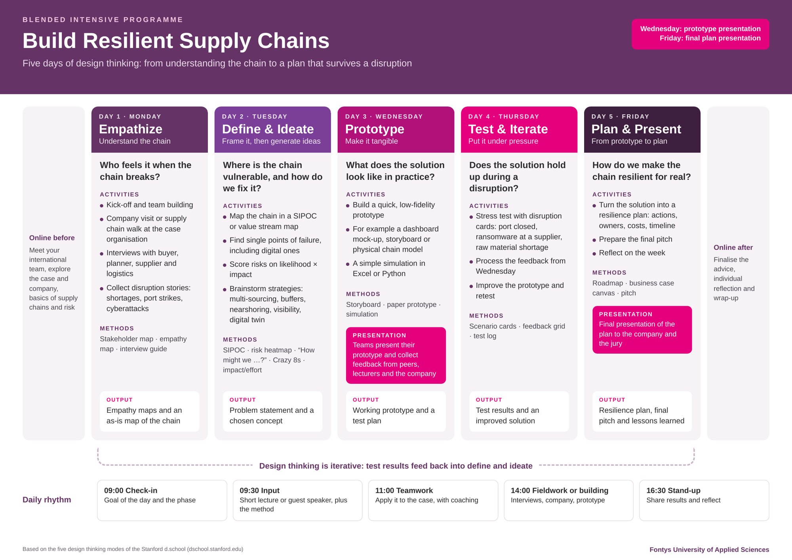

You have five days to go from a messy supply chain problem to a tested resilience plan. Design thinking is the way of working that gets you there. The double diamond is the map.
Design thinking is a human-centred way to solve complex problems. Designers developed it, but today companies, hospitals and governments use it for problems that have no obvious answer, such as making a supply chain survive a disruption.
Three ideas sit at its core:
The Stanford d.school describes design thinking in five stages. They are the steps you will take this week.
Understand the people involved. Interview, observe and listen without judging. What do the buyer, planner, supplier and logistics staff experience when something goes wrong? This week: Monday.
Make sense of everything you collected. Find patterns and decide what the real problem is. Write a problem statement and turn it into a “How might we …?” question. This week: Tuesday morning.
Generate as many ideas as possible for your HMW question, then choose the most promising one. Quantity first, quality later. This week: Tuesday afternoon.
Make your idea tangible, quickly and cheaply: a dashboard mock-up, a storyboard, a physical model or a simple simulation. A prototype is a question you can show to people. This week: Wednesday.
Put the prototype in front of users and under pressure. What works, what breaks, what surprises you? Use the feedback to improve, or go back to an earlier stage. This week: Thursday, then Friday you turn it into a plan.
The double diamond was developed by the UK Design Council. Two diamonds, two questions. The first diamond is about finding the right problem. The second is about finding the right solution. Each diamond first opens up (diverge) and then narrows down (converge).
Design thinking and the double diamond describe the same way of working from two angles. The five stages tell you what to do. The double diamond shows how your thinking moves: when to open up and when to make choices. Think of the diamond as the map and the stages as the route.
In practice the line is not perfectly straight. Testing on Thursday might show that you defined the problem too narrowly. Then you go back to the first diamond. That is not failure; that is design thinking doing its job.
At the end of the first diamond you have a clear problem statement. Before you start generating ideas, you turn that problem into a How Might We (HMW) question. It flips a problem into an open invitation for ideas. “How” says a solution exists, “might” says it is fine to explore, “we” says you do it together.
Tip: write 5 to 10 HMW questions as a team, then vote on the one you will use for ideation. Your Crazy 8s on Tuesday afternoon start from that question.
Crazy 8s is a fast sketching exercise: 8 ideas in 8 minutes, one minute per idea. The time pressure stops you from overthinking and pushes you past your first, most obvious idea. Ideas 5 to 8 are often the most interesting ones.
Example for “How might we keep deliveries going when our only port is closed for a week?”: a second port contract, a buffer stock near the factory, a rail alternative, an early-warning alert from the shipping company, a shared warehouse with a competitor, and more.
Most teams get stuck because they mix these modes. Agree as a team which mode you are in.

| Phase | Day | Key question | Methods | Output |
|---|---|---|---|---|
| Discoverdiverge | Monday | Who feels it when the chain breaks? | Stakeholder map, interviews, empathy map, disruption stories | Empathy maps + as-is chain map |
| Defineconverge | Tuesday morning | Where is the chain really vulnerable? | SIPOC, single points of failure, risk heatmap, “How might we…?” | Problem statement + chosen HMW question |
| Developdiverge | Tuesday afternoon + Wednesday | What could the solution look like? | Crazy 8s, impact/effort, storyboard, paper prototype, simple simulation | Chosen concept + working prototype |
| Deliverconverge | Thursday + Friday | Does it hold up during a disruption? | Disruption cards, feedback grid, test log, roadmap, business case | Tested resilience plan + pitch |
The buyer, planner, supplier and truck driver know things you don’t. Ask, listen, write it down.
Not with your first idea. A good problem statement saves you days.
A sketch or a rough mock-up gets better feedback than a long explanation.
Wednesday’s prototype is meant to be broken on Thursday. That is the point.
Your team is international on purpose. Different backgrounds mean more ideas in the diverge phases.